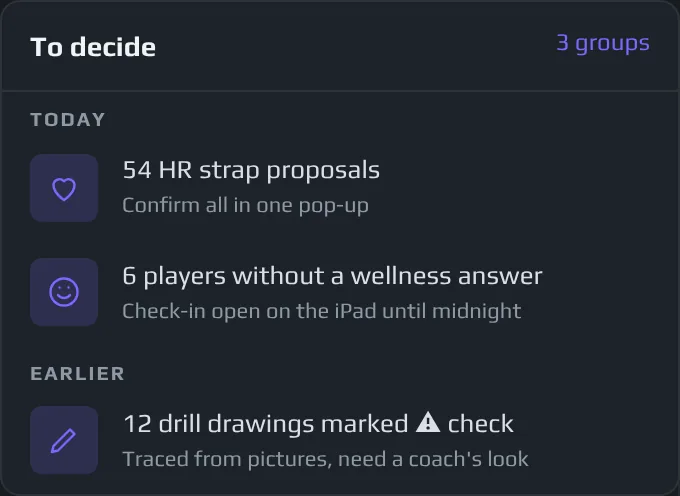

Locker Room · Heart Rate
Meno computer.
Più coaching.
Locker Room
Monitoraggio di carico e prontezzaTRIMP giornaliero, carico cronico e ACWR · media della squadra
Ogni giocatore · ACWR di oggi
Novità di questa stagione
Casella «Da decidere»
iAltro
Tutto ciò che attende un allenatore in un'unica lista: proposte sulla frequenza cardiaca, check-in, disegni da controllare, importazioni sconosciute. Confermate un intero gruppo in una finestra. Quando una fascia si stacca, ForeCheck mostra il buco e propone cosa fare. Voi confermate, e nulla viene riempito alle vostre spalle.

Carico sul ghiaccio
Ogni cambio, allenamento e partita, già contati
iAltro
Le sedute Catapult si sincronizzano da sole un paio d’ore dopo il ghiaccio. ForeCheck le trasforma in volume, intensità e richiesta di pattinaggio per giocatore, senza che nessuno debba esportare o unire nulla.
Ultime sedute · media della squadra
| Data | Seduta | Giocatori | min | TRIMP | %HRmax |
|---|---|---|---|---|---|
| 10/10 | Allenamento ghiaccio | 14 | 70 | 112 | 74 |
| 09/10 | Partita · trasferta | 19 | 62 | 168 | 81 |
| 08/10 | Allenamento ghiaccio | 13 | 75 | 142 | 77 |
| 07/10 | Allenamento ghiaccio | 14 | 77 | 136 | 78 |
| 06/10 | Partita · casa | 19 | 60 | 171 | 82 |
Frequenza cardiaca
Dentro lo sforzo, non solo la distanza
iAltro
Zone cardiache per giocatore e per seduta. Vedete chi ha davvero lavorato in rosso e chi ha fatto il minimo.
Minuti per zona cardiaca · ultima partita
Acuto:cronico
Picchi segnalati prima che facciano danni
iAltro
Un rapporto di carico acuto/cronico per ogni giocatore, con una parola per ogni stato, così la discussione parte dai due nomi giusti.
Segnalazioni di oggi
- #27 F1.483 partite in 4 giorni · limitare il ghiaccio
- #7 D1.42Rientro da malattia · ripresa graduale
- #14 F0.71Fuori due volte · pattinaggio extra
Le domande a cui risponde
Cosa decidete con ForeCheck
- Chi ha bisogno di meno ghiaccio oggi?
- Chi è sottocaricato e ha bisogno di lavoro extra?
- La partita di ieri sera è stata più dura del solito?
- Il carico della squadra sale troppo in fretta questa settimana?